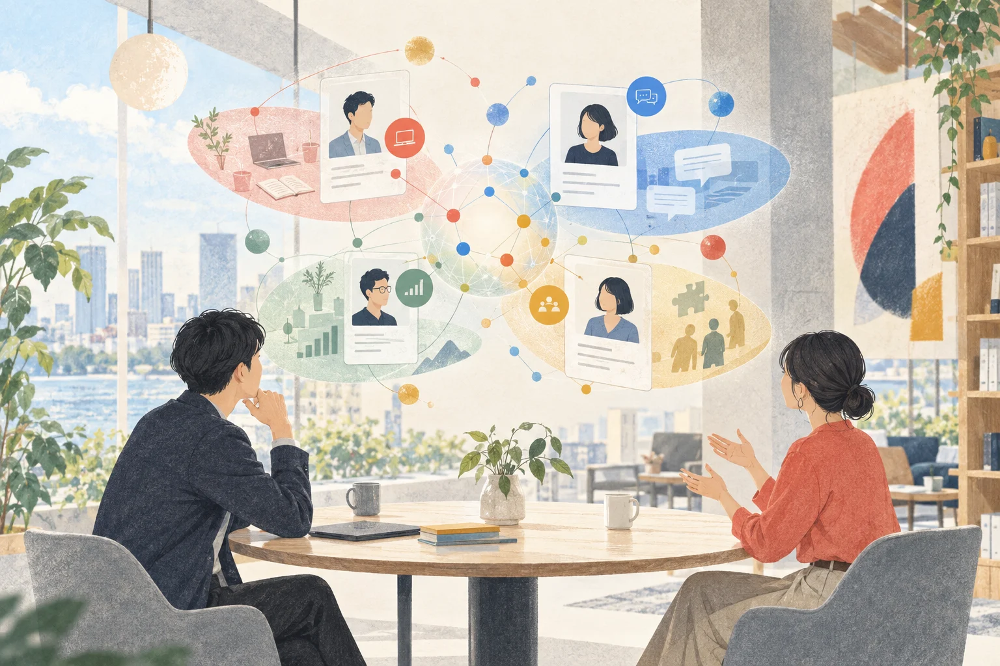

IDEA OWNER
白石 崇
株式会社ライトアップ
問い：AIは、新しいチームの関係づくりまで支援できるか。
CONCEPT INTERVIEW ／ AI FACILITATOR
AIが全員へ一人ずつ話を聞き、違いを評価ではなく、協働のヒントに変える。白石と西村が考えた「AIファシリテーター」という新サービス構想。

人を点数にするのではなく、話し合える言葉を増やす。
AIで制作したコンセプトイラストです。実際の会議写真や人物の似顔絵ではありません。
THE CONVERSATION
役割も経験も異なる人が集まった直後は、まだ互いの取り扱い方が分かりません。その空白を埋めるために、AIが全員の声を聞き、最初の対話を設計できないか。二人の会話は、そこから始まりました。
IDEA OWNER
株式会社ライトアップ
問い：AIは、新しいチームの関係づくりまで支援できるか。
DISCUSSION PARTNER
株式会社ライトアップ
視点：現場が答えやすく、次のヒアリングへつながる形にできるか。
STORY IN ONE MINUTE
※ 本記事は会議ログをもとに、読みやすさと企画検討のため編集・再構成したもので、逐語録ではありません。「AIファシリテーター」は構想段階の仮称です。提供時期、仕様、価格は未定です。
CHAPTER 01 ／ THE FIRST THIRTY DAYS
新しいプロジェクトが始まると、組織図と担当表はすぐにできます。しかし、「この人はいつ相談されると助かるか」「どんな説明なら判断しやすいか」は、仕事をしながら少しずつ知るしかありません。
たとえば社内で新しいチームができたとします。メンバーの名前をAIファシリテーターへ入れたら、AIが全員にインタビューする。そんなサービスはどうかなと思ったんです。
チームができた直後に使うのが分かりやすいですね。普段の会議では、いきなり仕事の話から始まります。でも、新しく集まった人たちは、相手が何を知っていて、何が得意で、どこで困りやすいかをまだ知りません。
全員が一度ずつ話せる入口をAIがつくれば、声の大きい人だけでチームの説明が決まることも減らせます。最初から完璧に理解するのではなく、「これから聞いてみたいこと」が見えるだけでも、関係づくりは変わりそうです。
経歴や職歴だけではなくて、趣味とか、価値観みたいなものも聞きたい。仕事のオンと、少し素に戻るオフ、その両方を知っていた方が一緒に働きやすいですよね。
はい。ただし、全部を同じ重さで集めるのではなく、本人が話してよい範囲を選べる必要があります。経歴は共有してよくても、価値観の回答は要点だけ、趣味はチームへ公開、といった具合です。
「何を知りたいか」より先に、「何なら安心して話せるか」を設計する。そこまで含めてファシリテーションだと思います。
AIが人を分析するサービスではなくて、互いに話しやすくなるための下準備なんですね。
そうですね。レポートに「あなたはこういう人」と固定的に書くより、「こういう場面では力を出しやすいと本人は話しています」「ここはチームで確かめてみましょう」と返す。結論より、次の会話を増やす方がこのサービスらしいです。
組織図の次に必要なのは、一緒に働くための説明書。会議ログをもとに編集・再構成
CHAPTER 02 ／ INTERVIEW EVERYONE
同じ設問を並べたアンケートは比較しやすい一方、回答の背景がこぼれます。AIファシリテーター構想では、チームの目的と一人ひとりの答えに応じて、次の質問を変えていきます。
プロジェクトごとに、AIがヒアリング項目をつくるイメージです。営業の新チームと、開発の新チームでは、知っておくべきことが違いますから。
最初にリーダーが、チームの目的、期間、メンバー、今回確かめたいテーマを入れる。その内容からAIが質問案をつくり、管理者がオン・オフを選ぶ形なら使いやすいです。
たとえば短期の提案チームなら「意思決定の速さ」「顧客対応の経験」「資料づくりでAIを使う場面」を厚くする。長期の開発チームなら「集中時間」「レビューの受け取り方」「不確実な状態での相談方法」を厚くする。質問の芯は共通でも、比重を変えられます。
回答する側は、面接されている感じにならない方がいいですよね。
「正解を当てる」のではなく、「新しいメンバーへどう伝えるかを一緒に考える」会話にしたいです。最初は自己紹介から入り、最近うまくいった仕事、助けてもらって嬉しかったこと、苦手な場面へ少しずつ深めます。
AI活用についても、「使っていますか」の一問だけでは浅いです。毎日か週一回か、文章・調査・分析・自動化のどこで使うか、出力をどう確かめるか、チームへ共有できる再現性があるか。具体的なエピソードを聞くと、次の支援が見えます。
質問をオン・オフできるなら、占いや価値観の話を使いたくない会社でも、その部分だけ外せますね。
はい。さらに本人側にも「答えない」「個人レポートだけに残す」「チームへ要約を出す」という選択が必要です。質問の自由度と、回答の公開範囲は別々に持たせるのがよいと思います。
目的・期間・メンバー・知りたいテーマを入力。
AI案から管理者が項目をオン・オフ。
本人が公開範囲を選びながら回答。
共通点・違い・対話テーマを整理。
実際に働いた経験から内容を見直す。
CHAPTER 03 ／ FOUR LENSES, NOT FOUR SCORES
「レベル感が分かる」と「人を序列化する」は違います。構想をサービスへ近づけるため、会話に出たオン・オフとAI活用度を、4つのレンズとして整理しました。
オン・オフの軸と、AI活用度の軸。全部で4軸くらいあると、チームの形が分かりやすい気がします。
「強い・弱い」だけにすると、人事評価のように見えてしまいます。仕事の得意・苦手、素の関心、協働の癖、AI活用の現在地。この4つを、場面によって変わる情報として見せるのがよさそうです。
たとえばAIを毎日使っている人でも、調査は得意で自動化は未経験かもしれません。逆に利用頻度は少なくても、検証手順を丁寧に持っている人もいます。「AIレベル3」と一つに丸めず、誰が何を共有でき、誰にどんな支援があると進むかまで見たいです。
仕事のオンとオフも、対立する二択ではないですよね。
はい。オンは、得意な役割、苦手な工程、集中しやすい条件、判断の仕方。オフは、趣味、関心、会話のきっかけ、大切にしていること。仕事だけでは見えない共通点が、相談のしやすさをつくることもあります。
ただしオフの情報は、とくに本人の選択を尊重します。共有したくないことまで「チームワークのため」と求めない。話したい人が話したい範囲で使うから、アイスブレイクとして機能します。
THE FOUR LENSES
得意な仕事、避けたい詰まり方、集中できる条件、任せてほしい役割。担当表には載りにくい実践知を扱います。
趣味、関心、最近夢中になっていること、価値観。本人が共有したい範囲だけを、会話の入口にします。
相談のタイミング、情報量、意思決定、フィードバックの受け取り方。違いを衝突前に言葉へ変えます。
頻度ではなく用途・深さ・検証・共有可能性を見る。チーム内の教え合いと次の小さな実験につなげます。
※ 4軸は会議内容を具体化するための編集上の整理案です。性格診断や人事評価の確定仕様ではありません。
人を比べるための軸ではなく、助け合い方を見つけるレンズ。
CHAPTER 04 ／ THE REPORT STARTS A CONVERSATION
全員のインタビュー後、AIは共通点や違いを整理します。しかし、相関図がきれいに出るだけではチームワークは変わりません。必要なのは、誰が何を話せばよいかが分かるレポートです。
全員分が集まったら、「このチームはこんな相関でした」と出したい。自己紹介や、「この人とはこう関わるといいかも」というヒントもあると面白いですね。
チーム全体の共通点と、補い合える違いを分けて見せたいです。たとえば「全員が考えてから話したい」なら、会議の議題を前日に共有する。「アイデアは多いが記録が苦手」なら、AI議事録を共通の習慣にする。可視化を、具体的な約束へ変えます。
一方で、誰か一人だけが回答した内容を「チームの傾向」として出すのは危険です。個人が特定される小さな集計は表示しない、本人が共有を選んだ内容だけ使う、AIの推測と本人の言葉を混ぜない、といったルールが必要です。
AI活用度も、レポートを読んだ次の日から役立てたいですね。
「高い・低い」ではなく、チーム内で教え合える組み合わせを提案します。調査が得意な人と、資料化が得意な人。プロンプトは作れる人と、事実確認が丁寧な人。二人で一つの業務を試せるようにする。
30日後には、最初の回答と実際の仕事を照らし合わせます。「思っていた得意」と「一緒に働いて見えた得意」が違うこともある。その更新まで含めて、AIファシリテーターは一度きりの診断ではなく、チームの学習記録になります。
経歴、得意なこと、最近の関心、相談してほしいテーマ。
誰が似ているかより、どの場面で力を組み合わせられるか。
議題共有、相談の時間、レビュー方法など、行動にできる約束。
一つの業務、一組のペア、一週間から始める小さな実験。
CHAPTER 05 ／ PLAYFUL, OPTIONAL, NEVER DECISIVE
会話では、価値観9ブロックや四柱推命のような遊び心のある材料も挙がりました。重要なのは、科学的な適性判定として扱わず、本人が楽しめる会話の入口に限定することです。
それこそ、四柱推命の占い結果が入っていてもいいと思うんです。「このチームはこれ最高」みたいなレポートがあると、みんなで見たくなりますよね。
固い診断だけではなく、会話が弾む要素としては面白いです。占いを信じるかどうかも含めて、その人らしさが出ますし、「意外と合っている」「ここは全然違う」と話すきっかけになります。
ただ、結果を役割分担や採用、人事評価の根拠にはしません。生年月日などの入力も任意で、使う目的を事前に伝える。表示するなら「エンターテインメントとしての参考情報」「本人とチームで確かめる問い」と明記するのが前提です。
価値観9ブロックも、ラベルを貼るより、九つの問いを持つような使い方がよさそうですね。
そうですね。「成長」「安定」「貢献」「自由」などの言葉から、今大切にしたいものを本人が選ぶ。その結果を性格の確定ではなく、働き方を相談する素材にします。
遊び心は、安心があるときに初めて効きます。答えない自由があり、笑って違うと言える。そこを守れれば、形式的な自己紹介では出ない人柄が見えてきます。
占いは答えではなく、「どう思う？」を始めるカード。
CHAPTER 06 ／ TRUST BEFORE INSIGHT
経歴、価値観、苦手な仕事、AIの習熟度。チームに役立つ情報ほど、扱い方を誤ると本人を傷つけます。このサービスの品質は、質問の賢さだけでなく、同意と公開範囲の設計で決まります。
チームワークを良くするためのサービスが、逆に「苦手を会社へ提出する場」になったら意味がないですね。
本人が最終プレビューを確認し、共有する内容を決める必要があります。AIの要約に違和感があれば直せる。個人レポートとチームレポートを分け、管理者だけが何でも見られる設計にはしない。
また、回答しなかったことを欠点として扱わないことも大切です。参加自体や質問ごとのスキップ、データの保存期間、削除方法を最初に示す。チームづくりのために使い、人事評価・査定・選抜へ転用しないという目的制限も明文化したいです。
AIが「この二人は相性が悪い」と断定するのも避けたい。
断定ではなく、確認可能な言葉へ変えます。「Aさんは事前に考える時間を好み、Bさんは会話しながら考えると回答しています。会議前に論点を共有し、当日は口頭で広げる方法を試しませんか」という形です。
相関は真実ではなく仮説です。本人たちが読んで、違うと思ったら更新する。その余白があるほど、レポートは安全で実用的になります。
DESIGN GUARDRAILS
質問単位でスキップでき、未回答をマイナス評価しない。
AI要約を本人が修正し、公開範囲を選んでから共有する。
小人数で個人が推定される集計は表示しない。
本人の回答、AIの整理、チームへの提案を明確に分ける。
採用、査定、配置の自動判断には利用しない。
保存期間、削除、再インタビューの手順を用意する。
CHAPTER 07 ／ ASK THE NEXT PERSON
会話の最後に名前が挙がったのは、リブ・コンサルティングの南東さん。構想を説明するだけでなく、実際に答えられる短い体験を見せれば、現場に必要な条件を聞きやすくなります。
これなら、リブ・コンサルティングの南東さんにも聞きやすいですよね。「こういうサービスを考えているんですが、新しいチームを立ち上げるときに使えそうですか」と。
聞きやすいと思います。説明資料だけより、5分のミニインタビューを体験してもらい、最後にサンプルのチームレポートを見せる方が、具体的な意見をもらえます。
「どのタイミングなら使うか」「社員はどこまで答えられるか」「管理職が本当に欲しいアウトプットは何か」「使ってはいけない場面は何か」。導入意向を聞く前に、現場の境界を聞くのが次の一手です。
最初から大きなシステムをつくらず、チーム登録、インタビュー、4軸レポートの一本が動けば、話を始められる。
はい。検証したいのは、質問の数ではありません。本人が「自分のことを適切に表している」と感じるか、チームで読んだ後に会話が増えるか、30日後に仕事の進め方が一つでも変わるか。その三つを確かめれば、次に何をつくるべきか見えます。
次に必要なのは、機能表ではなく、一人目の率直な反応。
AIファシリテーターが目指すのは、きれいな人物診断ではありません。まだ言葉になっていない得意、助けてほしいこと、話しかけ方、AIの使い方を一度ずつ聞き、チームが自分たちで確かめられる形にすること。新しいチームの最初の30日を、少し話しやすく、少し学びやすくするための構想です。
※ 本記事は2026年9月11日に行われた白石崇と西村果林の会議ログをもとに、顧客向けのインタビュー記事として編集・再構成したものです。逐語録ではなく、会話で示された構想を、利用体験と検証条件が伝わるよう具体化しています。AIファシリテーターは構想段階の仮称であり、本文中の4軸、レポート項目、安全設計、検証手順は確定仕様ではなく編集上の提案を含みます。四柱推命などの占いはエンターテインメントとしての任意項目を想定し、適性判定、人事評価、採用、配置の根拠にしない前提です。掲載ビジュアルはAIで制作したコンセプトイラストで、実際の会議写真や人物の似顔絵ではありません。